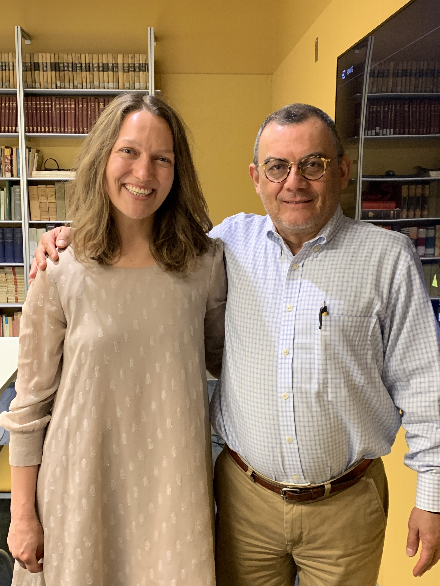

Research
Overview
I specialize in 20th- and 21st-century Mexican and Central American narrative fiction, as well as in broad comparative areas that reach into other disciplines and traditions: Latina/o Studies, critical theory, political philosophy, and border and diaspora studies. My research is animated by questions of political agency, economic precarity, and the violence that obtains throughout waning national modernity, as well as by the ways in which literature shapes, critiques, and indexes burgeoning neoliberal globalization.
My dissertation analyzed the novels of Chilean-Mexican-Catalunyan author Roberto Bolaño and Honduran-Salvadoran-US-Latino author Horacio Castellanos Moya as a means of conceptualizing the rise of what I call “post-national literature,” which refers to literary works that comment on and critique, both formally and thematically, the shifting dynamics of the nation state as neoliberal globalization becomes the dominant ordering system of world relations. To do this, I analyzed these authors’ engagements with literary and aesthetic traditions, particularly realism and the avant-garde, to demonstrate that a dialectic emerges between their works and the literary past that opens a space to interrogate the place of aesthetic praxis as neoliberal globalization becomes ascendant. Finally, I examined Bolaño’s and Castellanos Moya’s literary rejections of Leftist militant reason and discussed how their novels offer an internal critique of the Left’s complicity in the rise of neoliberal globalization.
My current book project, Novel Crises: Postnational Fiction in Neoliberal Mexico and Central America, examines contemporary novels that represent and respond to burgeoning neoliberal globalization. In it, I read late-20th and 21st-century Mexican and Central American narrative fiction—produced both domestically and in the diaspora—to two ends. First, I attend to the ways in which, with a distinctly neoliberal aesthetic, each work meditates on and denaturalizes the notion of “national” literatures. Second, I situate each novel in relation to the literary tradition that precedes it, and I consider how political and economic upheaval is accompanied by a related literary crisis. To this end, Novel Crises asks: If the novel is the genre par excellence of national modernity, what becomes of this literary form as neoliberal economic relations come to replace the nation state? In different ways, each of the novels that I examine poses this question, narrating not only the economic and biopolitical crises of the neoliberal present, but also recognizing their own status as works in crisis. I read novels by Roberto Bolaño, Laury Leite, Valeria Luiselli, Horacio Castellanos Moya, Claudia Hernández, and Carol Zardetto as post-national narratives, and I attend to the ways in which politics, economics, ethics, and aesthetics become entangled in these works. Along the way, my project engages with diverse theoretical perspectives, such as Critical Race Theory, Migration and Diaspora Studies, continental philosophy, and Sound Studies.
I am working on a second book project, tentatively titled Sounds of the Capitalocene: Violence and Aurality in Latin American Narrative Fiction, that considers how 20th- and 21st-century authors turn to aurality in narrative fiction as a means of critiquing and responding to exclusionary politics, economic inequalities, gendered violence, and ecological devastation of the neoliberal present. In it, I read fiction by authors such as Ana Castillo, Yuri Herrera, Emiliano Monge, Guadalupe Nettel, Juan Villoro, and Augustín Yáñez, whose work, I argue, engages with sound, silence, and listening as a means of grappling with the inequalities and cruelty of advanced capitalism.
Peer-Reviewed Publications


Journal articles
“From Ratiocination to Globalization: Poe, Borges, Bolaño and the Complot of the novela negra mexicana.” CR: The New Centennial Review (December 2021).
“A Narrative Vaivén: Lucha libre and the Modern Nation Unready-to-hand in Horacio Castellanos Moya’s La sirvienta y el luchador.”Modern Language Notes (March 2021) PDF
“Broken Bodies, Broken States: Roberto Bolaño on Neoliberal Logic and (Un)Mediated Violence.” Revista de Estudios Hispánicos (March 2021).
“Escatología y marginalización en la literatura andina: Las porosas fronteras sociopolíticas en Los ríos profundos de José María Arguedas,” Revista canadiense de estudios hispánicos (December 2019).
“Geopoetics, Geopolitics, and Violence: (Un)Mapping Daniel Alarcón’s Lost City Radio” Latin American Perspectives (September 2019).
“Carving Place out of Non-Place: Luis Rafael Sánchez’s ‘La guagua aérea’ and Post-National Space,” Chasqui: revista de literatura latinoamericana (May 2018).
Book chapters and other
“Migration and Diaspora: Central American Literature beyond the Isthmus,” Teaching Central American Literature in a Global Context, MLA Anthology, Eds. Mónica Albizúrez and Gloria E. Chacón, (Summer 2022).
“The Regional Novel and the Novel of the Mexican Revolution on Common Ground.” Oxford Handbook of the Latin American Novel. Co-authored with Amanda M. Smith, UC Santa Cruz. Eds. Ignacio López-Calvo and Juan E De Castro, November 2022.
“La Llorona, from Plaintive to Plaintiff: Accessing Rights in Neoliberal Globalization,” Cry Baby, eds. Norma Elia Cantú and Kathleen Alcalá, Trinity University Press, (forthcoming, Spring 2023).
“Untranslatability and Dissensus: Rewriting the Militant Left in Horacio Castellanos Moya,” Central American Literature as World Literature, ed. Sophie Esch, Bloomsbury Academic World Literature Series (forthcoming October 2023).
Book Reviews
Commissioned Thematic Review, “Listening in/to Literature.” Latin American Research Review, October 2022.
Books reviewed: Jason Borge’s Tropical Riffs (Duke UP, 2018), Ren Ellis Neyra’s The Cry of the Senses (Duke UP, 2020), Sarah Finley’s Hearing Voices (U Nebraska P, 2019), Marília Librandi’s Writing by Ear (U Toronto P, 2018), Francine Masiello’s The Senses of Democracy (U Texas P, 2018), and Luz María Sánchez Cardona’s Sonar (UAM Juan Pablo Editores, 2018).Review of Modernity at Gunpoint: Firearms, Politics, and Culture in Mexico and Central America (U of Pittsburgh P, 2018) by Sophie Esch. Revista de Literatura Mexicana Contemporánea, forthcoming.
Review of The Vanishing Frame: Latin American Culture and Theory in the Postdictatorial Era (U of Texas P, 2018) by Eugenio Claudio Di Stefano. Studies in Twentieth and Twenty-First Century Literature, 45.1 (August 2021).
Review of Chicana/o Remix: Art and Errata Since the Sixties (NYU P, 2017) by Karen Mary Davalos. Chiricú Journal: Latina/o Literatures, Arts, and Cultures 2.2 (May 2018).
Review of Pliegues del yo: Cuatro estudios sobre escritura autobiográfica en Hispanoamérica (Cuarto Propio, 2015) by Sergio R. Franco. Revista de Estudios Hispánicos 51.3 (October 2017).
Invited, Non-refereed
“Natalia Almada: The Sound & the Image,” Chiricú Journal: Latina/o Literatures, Arts, and Cultures 1.1 (September 2016), ed. Jonathan Risner: Indiana University Press.
Translations of poetry by Conceição Evaristo (Brazilian Portuguese to English), Revista Hiedra 1.1 (Fall 2013): 66-68.
Articles in Preparation
- “El mestizaje ahogado: El simbolismo y el agua en ‘Chac Mool’ de Carlos Fuentes,” with Ariel Ozdemir, UBC
- “From Minimalism to Muros: Teresa Margolles and the Differential Nature of the/our Globalised Present.”
- “¡Cacerolazo!: The Cooking Pot as Community, Culture, and Resistance in the Anthropocene.”
- “Rancière and the Paradox of Politics: Mexico, Central America, and the Long 1968 in Retrospect.”
- “Desnudando a los maîtres à penser: La novelización de lo histórico en El fin de la locura de Jorge Volpi.”
- “Dead Matter: A Historical Materialist Approach to Literary Corpses in W.G. Sebald and Oscar Zeta Acosta.”
- “A Tale of Two Genres: Duæling Discourses in Luis Rafael Sánchez’s Quíntuples.”
- “Violencia y alienación social en El Salvador: El arma en el hombre como Bildungsroman neoliberal.”
- “Silent Mexico: Muted Intertextuality in En la soledad de un cielo muerto”
